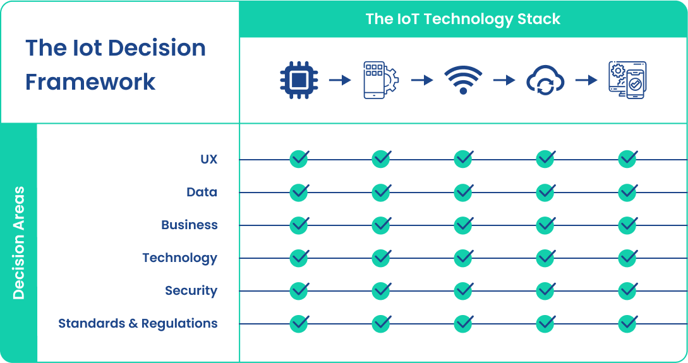

IOT - Internet of Things
Think of an Internet of Things platform as a group of technologies that provide the building blocks for developing your product. IoT platforms provide the “infrastructure” you use to create the specific features of your solution. The goal of IoT platform is to provide all the generic functionality for your application so the focus is on building features that differentiate your product. By taking over the non-differentiated functionality, IoT platforms help reduce development risk & cost, and accelerate product’s time to market.
Our Define, Build, and Run
approach along with IoT platform cater to organizations at different IoT adoption levels
DEFINE
Plan the IoT program suited to specific
business model needs.
needs and offer a quick ramp-up to discover your IoT needs and solutions, thus accelerating time to market with low risk and zero lock-ins
BUILD
Implement the IoT program with Time-to-market
advantage provided by platform components.
RUN
State-of-the-art IT Ops support services to deliver
the model to subscribers.
Our Solution
An IoT Framework for Product Managers
Product Management for an IoT product can be daunting & confusing, even for seasoned Product Managers as IoT products are more complex since you need to consider the complexity of five layers of technology: device hardware, device software, communications, cloud platform, and cloud applications. Not only do you need to make critical business and technical decisions at each of these five layers, but you need to make sure this myriad of decisions is consistent with your overall strategy and consistent across the five layers. This exponentially increases the difficulty of managing an IoT product

Our IoT framework provides a structured approach to creating a robust IoT product strategy. IoT Decision Framework helps one understand the areas where decisions need to be made and ensures consistency across all decisions. IoT Decision Framework provides you with a structured approach to uncover the questions you need to ask and navigate across the various departments to make the best decisions for your product. Think of it as a map to help you discover all the necessary considerations as you build your IoT business plan, roadmap, backlog, etc.
Our Services
This is the primary content of the panel.
This is the primary content of the panel.
This is the primary content of the panel.